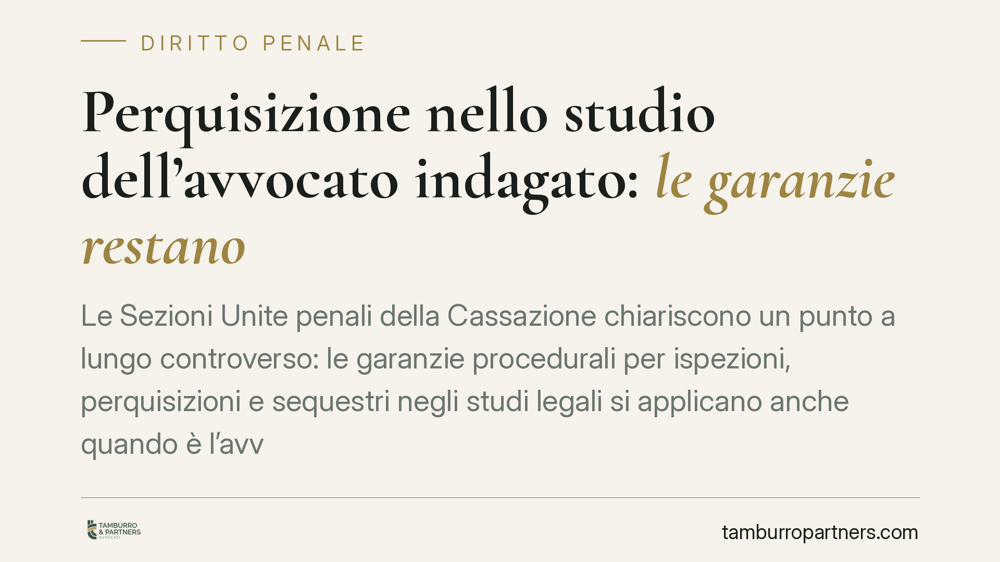

Perquisizione nello studio dell'avvocato indagato: le garanzie restano
Le Sezioni Unite penali della Cassazione chiariscono un punto a lungo controverso: le garanzie procedurali per ispezioni, perquisizioni e sequestri negli studi legali si applicano anche quando è l'avvocato a essere indagato. La ragione non è un privilegio del professionista, ma la tutela del segreto professionale e del diritto di difesa dei suoi clienti. La violazione dell'avviso all'Ordine comporta nullità e inutilizzabilità.

Il principio affermato dalle Sezioni Unite
La Corte di Cassazione, riunita nel suo massimo consesso penale, ha risolto un contrasto interpretativo di rilievo. La questione era la seguente: quando l'avvocato non è terzo estraneo al procedimento, ma è lui stesso indagato, le cautele previste per perquisire il suo studio continuano ad applicarsi?
La risposta è affermativa. Le garanzie non tutelano la persona dell'avvocato in quanto tale, ma il rapporto fiduciario con i clienti. E quel rapporto non viene meno per il solo fatto che il professionista sia raggiunto da un'ipotesi accusatoria.
Inquadramento normativo
Il riferimento è l'art. 103 del codice di procedura penale, che disciplina le garanzie di libertà del difensore. La norma prevede una procedura rinforzata per ispezioni, perquisizioni e sequestri negli uffici dei difensori.
In concreto, il codice richiede tre presidi: l'avviso preventivo al Consiglio dell'Ordine forense, affinché il presidente o un suo delegato possa assistere all'atto; la presenza necessaria del rappresentante dell'Ordine; e l'intervento diretto del magistrato, che deve procedere personalmente e non può delegare l'operazione alla sola polizia giudiziaria — per esempio agli operatori della Guardia di Finanza.
Queste cautele rispondono a un valore di rango costituzionale. L'art. 24 della Costituzione garantisce l'inviolabilità del diritto di difesa in ogni stato e grado del procedimento. Il segreto professionale è lo strumento che rende quel diritto effettivo: senza riservatezza, nessun cliente confiderebbe al proprio difensore ciò che serve per difenderlo.
Perché la qualità di indagato non fa venire meno la tutela
Il punto centrale della decisione è il destinatario reale della protezione. La documentazione custodita in uno studio legale contiene atti, corrispondenza e informazioni che appartengono ai clienti, non all'avvocato.
Se si consentisse di aggirare le garanzie ogni volta che il professionista è indagato, si esporrebbe il segreto di soggetti del tutto estranei all'indagine. La riservatezza dei clienti finirebbe per dipendere dalla posizione processuale del loro difensore: una conseguenza incompatibile con l'art. 24 Cost.
Le Sezioni Unite hanno perciò affermato che la procedura rinforzata è la regola, salvo il perimetro degli atti che costituiscono corpo del reato o cose pertinenti al reato riferibili alla posizione dell'avvocato indagato. Ma anche in questa ipotesi le modalità operative dell'art. 103 c.p.p. non possono essere ignorate.
Implicazioni pratiche
La conseguenza processuale è netta. L'omissione dell'avviso al Consiglio dell'Ordine determina la nullità dell'atto e l'inutilizzabilità di quanto acquisito.
Inutilizzabilità significa che il materiale raccolto in violazione della procedura non può fondare la decisione del giudice, né nel merito né nelle fasi cautelari. Un sequestro condotto senza avviso all'Ordine e senza la presenza del magistrato rischia quindi di risultare processualmente sterile.
Per l'avvocato indagato la garanzia opera su due piani: protegge la sua difesa e, insieme, protegge i clienti che gli hanno affidato informazioni riservate. Per questi ultimi, la pronuncia è una tutela indiretta ma sostanziale: i loro segreti non diventano acquisibili per il solo fatto che il difensore sia sotto indagine.
Cosa fare in concreto
- Verificate immediatamente il verbale. In caso di perquisizione o sequestro nello studio, controllate che risulti l'avviso al Consiglio dell'Ordine e la presenza personale del magistrato.
- Annotate le irregolarità a verbale. Fate risultare per iscritto l'eventuale assenza del rappresentante dell'Ordine o l'operato della sola polizia giudiziaria.
- Sollevate tempestivamente l'eccezione. La nullità e l'inutilizzabilità vanno dedotte nelle sedi e nei termini processuali corretti, incluse le fasi cautelari.
- Isolate la documentazione dei clienti estranei. Distinguete gli atti riferibili alla posizione dell'indagato da quelli coperti dal segreto professionale altrui.
- Attivate subito il Consiglio dell'Ordine. Il coinvolgimento dell'ente è parte della garanzia e va richiesto se pretermesso.
Consigliamo di documentare ogni fase dell'accesso con la massima precisione: la solidità di un'eccezione di inutilizzabilità dipende spesso da ciò che è stato annotato nell'immediatezza dell'atto.
---
*Contributo informativo a cura di Tamburro & Partners - Avv. Giuseppe Tamburro. Non costituisce parere legale.*
Ogni condominio ha una storia a sé.
Se gestisci un'amministrazione e vuoi un confronto su una specifica questione condominiale, scrivi allo studio. Ti rispondiamo entro un giorno lavorativo.